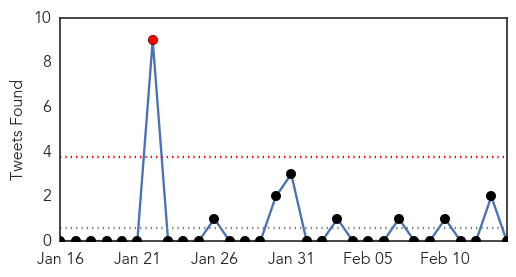
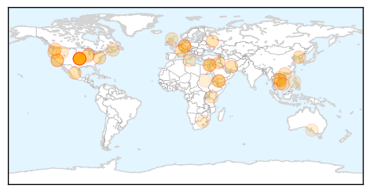
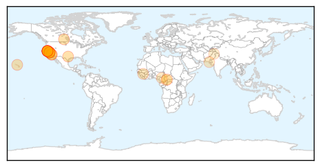
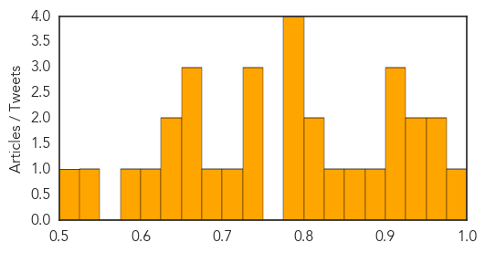

Unknown
30-Day Web Trend
0 alerts, 14 warnings

30-Day Twitter Trend
1 alerts, 0 warnings

Article Locations
Article Confidences

Top Articles:
- 0.984
- Boy becomes Cambodia's first bird flu death of year
- 0.974
- Children prone to hand-foot-and-mouth disease
- 0.928
- Manitoba has first case of pig virus; no risk to humans, other animals
- 0.917
- Chicago Tribune
- 0.917
- Chicago Tribune
- 0.917
- Chicago Tribune
- 0.917
- Chicago Tribune
- 0.917
- Chicago Tribune
- 0.917
- Chicago Tribune
- 0.917
- Chicago Tribune
- 0.917
- Chicago Tribune
- 0.917
- Chicago Tribune
- 0.917
- Chicago Tribune
- 0.917
- Chicago Tribune
- 0.917
- Chicago Tribune
- 0.917
- Chicago Tribune
- 0.917
- Chicago Tribune
- 0.917
- Chicago Tribune
- 0.917
- Chicago Tribune
- 0.917
- Chicago Tribune
- 0.904
- Vietnam bans Chinese poultry as new deadly bird-flu virus strain reaches border
- 0.902
- Manitoba sees first case of pig virus; no risk to humans, other animals
- 0.892
- Manitoba’s Farms under Threat of PEDv Virus Fatal for Piglets
- 0.866
- Obama pledges $1 billion in loan guarantees for Jordan
- 0.866
- Syria opposition has no conditions for third round of peace talks -spokesman
- 0.866
- Russia says Damascus wants opposition commitment to fight "terrorism"
- 0.866
- Russia warns West against interference in Ukraine
- 0.866
- Taha Zaid Khatir, 12, walks with an artificial limb at a prosthetic center in Sanaa
- 0.840
- Hong Kong reports fifth H7N9 bird flu case
- 0.786
- First suspected case of pig virus reported at Prince Edward Island pork farm
- 0.760
- Deadly pig virus shows up in Manitoba
- 0.749
- Deadly pig virus suspected on Prince Edward Island
- 0.705
- The most from the coast
- 0.693
- Child has third case of Tubercolosis in Sutherland
- 0.688
- Is leprosy making a comeback?
- 0.662
- Fish sold in Niles sickens two
- 0.630
- 4-Traders
- 0.622
- SA's TB rate among the highest in the world
- 0.619
- 13 Awful Things That Happen If You Don't Brush And Floss Your Teeth
- 0.548
- SGGP English Edition- Vietnam implements preventive measures against bird flu
- 0.512
- Shortage? Doctors in PH 'enough' – Ona
- 0.505
- Vietnam joins countries launching global health effort
- 0.503
- Morbidly obese patients died due to skills shortfalls, coroner rules
- 0.501
- Steps taken to address overcrowding in civilian sites ahead of rainy season in South Sudan
Top Tweets:
-
No tweets found for Feb 14, 2014
Measles
30-Day Web Trend
1 alerts, 0 warnings

30-Day Twitter Trend
0 alerts, 0 warnings

Article Locations
Article Confidences
Top Articles:
- 0.990
- To vaccinated BART riders: No need to worry about measles
- 0.972
- Measles-infected student may have exposed San Francisco BART passengers
- 0.964
- Measles warning
- 0.944
- Community at risk after UC Berkeley student with measles attends class, rides BART
- 0.929
- Did You Ride BART Feb 4-7? Then You Might Have Been Exposed To The Measles
- 0.916
- Health Department Investigates Measles Case on Oʻahu
- 0.913
- Health Officials Warn San Francisco BART-Riders Of Measles Exposure
- 0.907
- San Francisco Commuters Warned of Measles on BART
- 0.878
- Measles alert issued for California train riders
- 0.866
- Measles Exposure on BART From Cal Berkley University Student
- 0.842
- Bay Area Student May Have Exposed Thousands To Measles On Public Transit « CBS Sacramento
- 0.825
- Bay Area officials warn of measles exposure
- 0.822
- Measles alert issued for California train riders
- 0.792
- Measles Exposure U.C. Berkeley
- 0.789
- UNICEF helps Guinea vaccinate children against measles
- 0.782
- A UC Berkeley Student With Measles Attended Class And Rode The BART, Health Officials Warn
- 0.778
- Health officials: Student infected with measles may have spread illness on BART, UC Berkeley campus
- 0.743
- Calif. officials warn of possible measles exposure
- 0.743
- Register-Pajaronian California officials warn of measles exposure
- 0.741
- California officials warn of measles exposure - MyNorthwest
- 0.722
- Myths about life-saving vaccines busted
- 0.692
- UNICEF speaks out against 133 child killings in Central African Republic
- 0.669
- UNICEF horrified at cruelty against children in Central African Republic conflict
- 0.657
- Berkeley student who used BART may have exposed many to measles
- 0.651
- BART rider & UC Berkeley student infected with measles potentially exposed thousands
- 0.646
- UNICEF ‘horrified’ at cruelty against children in Central African Republic conflict
- 0.625
- BART Riders May Have Been Exposed To Measles On Trains « CBS Sacramento
- 0.607
- California commuters warned: You might have the measles
- 0.588
- The Taliban are winning the war on polio - Laurie Garrett and Maxine Builder
- 0.544
- California Commuters Warned of Measles Risk
- 0.523
- TEMECULA: Students sent home after measles found
Top Tweets:
-
No tweets found for Feb 14, 2014